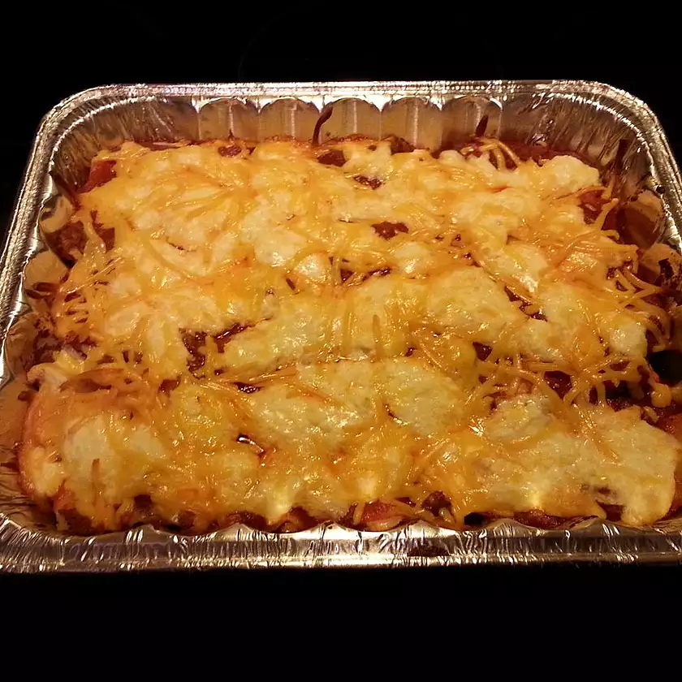

Brenda's Lasagna

A lasagna recipe the entire family will love!
Ingredients
- 1 (16 ounce) package lasagna noodles
- 1 pound lean ground beef
- 1 clove garlic, minced
- 1/2 pound shredded mozzarella cheese
- 1 pint ricotta cheese
Instructions
- Bring a large pot of lightly salted water to a boil.
Add pasta and cook for 8 to 10 minutes or until al dente; drain.
-
Preheat oven to 350 degrees F (175 degrees C). In a large skillet
over medium-high heat, brown beef and season with salt and pepper; drain.
Stir in spaghetti sauce and garlic and simmer 5 minutes.
-
In a medium bowl, combine mozzarella, Cheddar and ricotta; stir well.
In 9x13 inch pan, alternate layers of noodles, meat mixture and cheese
mixture until pan is filled.
- Bake in preheated oven for 30 minutes, or until cheese is melted and bubbly.